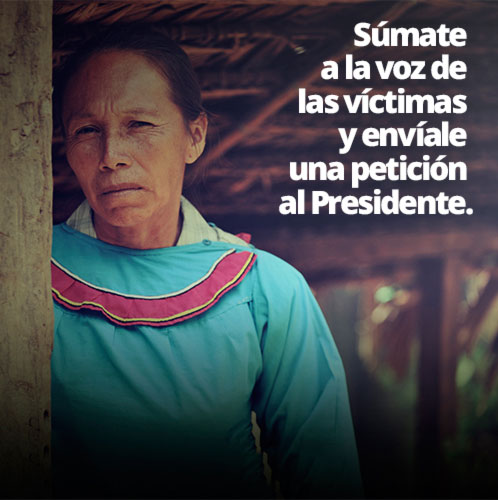
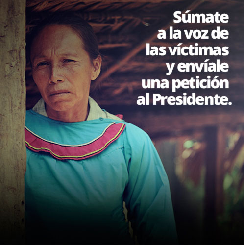

Lucila Sánchez Romayna
- Nivel de instrucción: primero de primaria.
- Esterilizada con engaños en el Centro de Salud de Iparía.(Distrito Iparía, provincia Coronel Portillo - Ucayali)
- Fecha del hecho: 1999
- Edad de la ligadura: 33
“La enfermera Nancy, de la posta de Belén, me dijo que fuera al centro de salud para que le hagan chequeos a mi bebé y para recoger medicinas...Me llamaron con una lista para que entre a una sala, me agarraron de los brazos como si fuese un animal...No entendía por qué tenía ese corte”.
Antonia López Zumaeta
- Nivel de instrucción: primaria completa.
- Esterilizada con engaños en el Centro de Salud Iparía. (Distrito Iparía, provincia Coronel Portillo - Ucayali)
- Fecha del hecho: 1999
- Edad de la ligadura: 33
“Las enfermeras me dijeron que podía ir al centro de salud para recoger medicinas...Veía a mujeres entrando y saliendo en camillas, yo pensaba que les estaban haciendo el papanicolau…Sacaron una lista y me llamaron por mi nombre...Al despertar ya estaba ligada”.
Noemí Franco Zumaeta
- Nivel de instrucción: cuarto de primaria.
- Esterilizada con hostigamiento y a la fuerza en el Centro de Salud Iparía. (Distrito Iparía, provincia Coronel Portillo - Ucayali)
- Fecha del hecho: 1996
- Edad de la ligadura: 40
“Las enfermeras del puesto de salud Galilea me querían llevar, yo les decía que no...Me decían que tenía que ir porque ya estaba en la lista para ligaduras del Centro de Salud Iparía…En la sala yo decía que no quería, el doctor me agarró de los dos brazos, y otro me puso una inyección”.
Bertha Mori Nunta
- Nivel de instrucción: primaria completa.
- Esterilizada con hostigamiento y a la fuerza en el Centro de Salud Masisea. (Distrito Masisea, provincia Coronel Portillo - Ucayali)
- Fecha del hecho: 1996
- Edad de la ligadura: 21
“Enfermeras del puesto de Abujao iban a mi casa a exigirme que me ligue en el centro de salud Masisea...Me decían que yo era menor de edad, pero que me pondrían en su lista de ligaduras que tenía 28 años...Me amarraron, les dije a los doctores que no quería, pero me dijeron que yo ya había decidido”.
Dora Vásquez Sánchez
- Nivel de instrucción: cuarto de secundaria.
- Esterilizada con engaños en el Centro de Salud Masisea. (Distrito Masisea, provincia Coronel Portillo - Ucayali)
- Fecha del hecho: 1999
- Edad de la ligadura: 25
“Trabajadores del puesto de Bella Flor fueron a mi casa, me dijeron que en el centro de salud me darían píldoras para cuidarme...Me pusieron en una camilla, me sacaron la ropa, tenía temor, no entendía por qué me hacían eso, no tuve la valentía de preguntarles…La parte donde me ligaron se infectó”.
Hilda Castro Reátegui
- Nivel de instrucción: iletrado/sin instrucción.
- Esterilizada con amenazas en el Hospital de Contamana (Distrito Contamana, provincia Ucayali - Loreto)
- Fecha del hecho: 1997
- Edad de la ligadura: 37
“El doctor dijo que había llegado un documento del Hospital de Contamana para que todas se liguen por orden del gobierno, dijo que si no iban a venir personas “alzados en armas” para llevarse a nuestros hijos...En el hospital había seis policías. Queríamos escapar pero ellos nos daban miedo”.
Luzmila Silvano de Guimaraes
- Nivel de instrucción: cuarto de primaria.
- Esterilizada con amenazas en el Hospital de Contamana. (Distrito Contamana, provincia Ucayali - Loreto)
- Fecha del hecho: 1998
- Edad de la ligadura: 38
“Mandaron una información del hospital para que todas nos ligáramos por orden del Gobierno. Los doctores decían que si no en algunos años vendrían los chinos a quitarnos a nuestros hijos...Me amarraron las manos porque me movía mucho en la camilla”.
Nilda Pino Canayo
- Nivel de instrucción: primaria completa.
- Esterilizada a la fuerza y con violencia en el Hospital Regional de Pucallpa. (Ciudad de Pucallpa - Ucayali)
- Fecha del hecho: 1996
- Edad de la ligadura: 24
“Les dije: ustedes están ganando dinero con nosotras por las ligaduras, yo sé eso porque trabajo con la madre María Dolores (monja)...Un enfermero dijo que mi vagina parecía un labio, me manoseaba...Yo les decía: ¿por qué me están haciendo esto? Me decían que ellos solo cumplían órdenes”.
Romelia López Quesus
- Nivel de instrucción: primaria completa.
- Esterilizada con engaños y soborno en el Hospital Regional de Pucallpa. (Ciudad de Pucallpa - Ucayali)
- Fecha del hecho: 1996
- Edad de la ligadura: 30
“Me trajeron al puesto de salud Santa Rosa, y de ahí, sin yo saber, me llevaron al Hospital Regional de Pucallpa…Me hicieron pasar a una sala y me dijeron que me iban a hacer la ligadura. Les dije varias veces que no quería, pero me dijeron que me entregarían ropa, alimentos y dinero”.
María Maldonado Rojas
Nivel de instrucción: primaria completa.
- Esterilizada con hostigamiento y a la fuerza en el Hospital Amazónico. (Ciudad de Pucallpa - Ucayali)
- Fecha del hecho: 1996
- Edad de la ligadura: 30
“Fui al Hospital y mi primo Miguel Rojas (asistente de cirujano del hospital) me recibió, y me dijo que ya no debía tener más hijos porque así lo mandaba el Gobierno…En la sala de operación me hicieron firmar un papel en español, yo sólo sé shipibo, no sé de qué era ese papel”.
Isabel García Tenazoa
- Nivel de instrucción: secundaria completa.
- Esterilizada con hostigamiento y a la fuerza en el Hospital Amazónico. (Ciudad de Pucallpa - Ucayali)
- Fecha del hecho: 1997
- Edad de la ligadura: 27
“Me obligaron a firmar un papel que no entendía…Ocho señoras entraron primero, yo fui la última. Pasaban delante mío y veía que caían sus lágrimas…Me amarraron los brazos, una enfermera me agarraba la cabeza y me decía: No grite para que el doctor pueda terminar rápido”.
Dora Fernández Barbarán
- Nivel de instrucción: primaria completa.
- Esterilizada con hostigamiento y violencia en el Hospital Amazónico. (Ciudad de Pucallpa - Ucayali)
- Fecha del hecho: 1998
- Edad de la ligadura: 34
“Insistían para que me ligara. Me llevaron a una sala, me quitaron la ropa. Les dije que no quería. Les dije: ¿Quién les ha dicho que me hagan esto?, ¿mi marido, mis padres?...Le jalé el pelo a la enfermera, ella me golpeó. Llamaron a otras enfermeras porque yo seguía jalándole el pelo”.
Norma Mori Silvano
- Nivel de instrucción: tercero de primaria.
- Esterilizada con engaños y a la fuerza en el Hospital Amazónico. (Ciudad de Pucallpa - Ucayali)
- Fecha del hecho: 1999
- Edad de la ligadura: 25
“Las enfermeras del puesto de salud de Pachitea me dijeron para ir a pasear a Pucallpa, yo confiaba en ellas…Me llevaron en bote al hospital… En un cuarto me amarraron las manos y me ligaron…Me dijeron que ya podía irme y que nunca más tendría hijos”.
Agustina Saldaña Rengifo
- Nivel de instrucción: primaria completa.
- Esterilizada con hostigamiento y a la fuerza en el Hospital Amazónico. (Ciudad de Pucallpa- Ucayali)
- Fecha del hecho: 1996
- Edad de la ligadura: 30
“Sácate la ropa me decían, como Eva…En la cama desnuda, amarrada, el doctor me decía que ya nunca iba a tener hijos, que me iban a hacer la ligadura porque estaban en plena campaña”.
Rosa Sánchez Barbarán
- Nivel de instrucción: segundo de secundaria.
- Esterilizada con engaños en el Hospital Amazónico. (Ciudad de Pucallpa - Ucayali)
- Fecha del hecho: 2000
- Edad de la ligadura: 33
“Me enteré que todas las mujeres debían inscribirse en el hospital Amazónico para una campaña de salud…Recién en el hospital supe que esa campaña era para no tener más hijos... No he firmado ningún papel para que me hagan la ligadura”.

 
